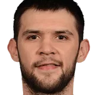

His best final NBA finish was #4 of 30, with the 2014-15 Houston Rockets. In his 130 games for 3 teams over 4 seasons they went 68–62 (52.3%), +6 games over .500, with an average final finish of 16.5.
Jump to: Record by opponent · Season by season · Teammate help
Compare Joey Dorsey with…
Final NBA finish, season by season
Title Finals Other playoffs Missed playoffs. #1 = champion; the dashed line is last place that season. Each point opens that season's final standings.
All 30 teams ranked in 2014-15, his best finish (#4)Teammate help
 James Harden5.01 season
James Harden5.01 season Yao Ming4.01 season
Yao Ming4.01 season Tyreke Evans0.81 season
Tyreke Evans0.81 season
Career
Career records (W–L, W − L, with and without) include 2026-27 games through Nov. 22, 2026; season counts and finishes are through 2025-26. Each card opens its board in the same scope. How we count.

Latest completed seasons
- 2014-15·
 Houston·#4 of 3056–26 · Lost in the conference finals 1–4 to
Houston·#4 of 3056–26 · Lost in the conference finals 1–4 to  Golden State
Golden State - 2010-11·
 Toronto·#28 of 3022–60 · Missed playoffs
Toronto·#28 of 3022–60 · Missed playoffs - 2009-10·
 Sacramento·#28 of 3025–57 · Missed playoffs
Sacramento·#28 of 3025–57 · Missed playoffs
Season by season
Newest first; every header sorts. Final NBA finish is the team's rank among all teams that season (#1 = champion) and opens that season's standings. "Without him" uses the team-season window; the span line counts only the games between his first and last game for the team.
| 2014-15 | #4 of 30 | 56–26 68.3% | Lost conf finals 1–4 | 69 of 82 | 48–21 69.6% | 8–5 61.5%span: 6–5, gap +15.0 | +8.0 | |
| 2010-11 | #28 of 30 | 22–60 26.8% | Missed playoffs | 43 of 82 | 11–32 25.6% | 11–28 28.2%span: 10–26, gap −2.2 | −2.6 | |
| 2009-10 | #17 of 30 | 42–40 51.2% | Missed playoffs | 7 of 82 | 3–4 42.9% | 25–21 54.3%span: 1–2, gap +9.5 | −11.5 | |
| 2009-10 | #28 of 30 | 25–57 30.5% | Missed playoffs | 8 of 82 | 4–4 50.0% | 3–17 15.0%span: 2–9, gap +31.8 | +35.0 | |
| 2008-09 | #6 of 30 | 53–29 64.6% | Lost conf semis 3–4 | 3 of 82 | 2–1 66.7% | 51–28 64.6%span: 13–6, gap −1.8 | +2.1 |
On/off, starts and close games
From the lineup data, 1996-97 on. On/off is net points per 100 possessions with him on the floor minus off, a different unit from the win-rate gaps. Started and off the bench are team records in those games; close games are those within 5 points in the last 5 minutes with him on the floor.
| 2014-15 | −3.7 | 11–6 64.7% | 37–15 71.2% | 3–0 100.0% | |
| 2010-11 | +7.8 | 2–7 22.2% | 9–25 26.5% | 0–1 0.0% | |
| 2009-10 | +21.6 | N/A | 3–4 42.9% | N/A | |
| 2009-10 | +2.7 | N/A | 4–4 50.0% | N/A | |
| 2008-09 | −35.9 | N/A | 2–1 66.7% | N/A |
Teammate help by season
Two separate numbers per season, each with every teammate that adds to it. Help this season = Teammates Score points for honors won that season by teammates who shared a game with him. Help coming in = the same teammates' honors from the season before. How help works.
- 2014-15Houston
James Harden All-NBA 1stAll-Star569 g
Help this season: 5 = 5 James Harden
More: help coming in and other teammates
Help coming in (teammates' honors the season before): 9.5 = 5 James Harden + 4 Dwight Howard + 0.5 Patrick Beverley
Other teammates (no honors that season): Trevor Ariza 69 g, Jason Terry 65 g, Donatas Motiejunas 58 g, Corey Brewer 49 g, Josh Smith 48 g, Patrick Beverley 46 g, Kostas Papanikolaou 34 g, Dwight Howard 32 g, Terrence Jones 28 g, Nick Johnson 27 g, Pablo Prigioni 21 g, Isaiah Canaan 20 g, Tarik Black 19 g, Troy Daniels 14 g and 4 more
- 2010-11TorontoHelp this season: 0, no honored teammate
- 2009-10Houston
 Aaron Brooks MIP0.257 g
Aaron Brooks MIP0.257 g
Help this season: 0.25 = 0.25 Aaron Brooks
More: help coming in and other teammates
Help coming in (teammates' honors the season before): 0.5 = 0.5 Shane Battier
Other teammates (no honors that season): Luis Scola 7 g, Shane Battier 7 g, Chase Budinger 7 g, Carl Landry 7 g, Chuck Hayes 7 g, Trevor Ariza 6 g, David Andersen 6 g, Brian Cook 5 g, Jermaine Taylor 5 g, Kyle Lowry 3 g, Garrett Temple 2 g, Will Conroy 2 g
- 2009-10Sacramento
Tyreke Evans ROYAll-Rookie 1st0.757 g
Help this season: 0.75 = 0.75 Tyreke Evans
More: help coming in and other teammates
Help coming in (teammates' honors the season before): 0
Other teammates (no honors that season): Beno Udrih 8 g, Ime Udoka 8 g, Omri Casspi 8 g, Carl Landry 8 g, Francisco Garcia 8 g, Sean May 8 g, Donte Greene 7 g, Spencer Hawes 7 g, Andres Nocioni 5 g, Jason Thompson 4 g, Dominic McGuire 3 g, Garrett Temple 1 g
- 2008-09Houston
Yao Ming All-NBA 2ndAll-Star43 g
 Metta World Peace All-Def 2nd0.53 gShane Battier All-Def 2nd0.52 g
Metta World Peace All-Def 2nd0.53 gShane Battier All-Def 2nd0.52 g
Help this season: 5 = 4 Yao Ming + 0.5 Metta World Peace + 0.5 Shane Battier
More: help coming in and other teammates
Help coming in (teammates' honors the season before): 5.875 = 3 Yao Ming + 2 Tracy McGrady + 0.5 Shane Battier + 0.25 Luis Scola + 0.125 Carl Landry
Other teammates (no honors that season): Luis Scola 3 g, Carl Landry 3 g, Aaron Brooks 3 g, Chuck Hayes 3 g, Luther Head 3 g, Brent Barry 2 g, Rafer Alston 2 g, Tracy McGrady 2 g, Von Wafer 2 g
Record against each opponent
Regular season, through 2025-26 (2026-27 games not included): 130 games, 68–62, against 30 franchises.
Grouped by franchise (named as today); game lists keep each team's name that season. Filters and the tab are kept in the URL, so a filtered view can be shared.
| Games list | |||||||
|---|---|---|---|---|---|---|---|
| 7 | 3–4 | 42.9% | −1 | 1–0 (1–2 in games) | 2009-10 to 2014-15 | ||
| 6 | 2–4 | 33.3% | −2 | N/A | 2009-10 to 2014-15 | ||
| 6 | 3–3 | 50.0% | 0 | N/A | 2009-10 to 2014-15 | ||
| 6 | 5–1 | 83.3% | +4 | N/A | 2009-10 to 2014-15 | ||
| 6 | 2–4 | 33.3% | −2 | N/A | 2008-09 to 2014-15 | ||
| 6 | 3–3 | 50.0% | 0 | N/A | 2009-10 to 2014-15 | ||
| 5 | 2–3 | 40.0% | −1 | N/A | 2009-10 to 2014-15 | ||
| 5 | 5–0 | 100.0% | +5 | N/A | 2008-09 to 2014-15 | ||
| 5 | 2–3 | 40.0% | −1 | N/A | 2010-11 to 2014-15 | ||
| 5 | 4–1 | 80.0% | +3 | 1–0 (2–1 in games) | 2010-11 to 2014-15 | ||
| 5 | 2–3 | 40.0% | −1 | N/A | 2009-10 to 2014-15 | ||
| 5 | 3–2 | 60.0% | +1 | N/A | 2009-10 to 2014-15 | ||
| 5 | 2–3 | 40.0% | −1 | N/A | 2010-11 to 2014-15 | ||
| 5 | 3–2 | 60.0% | +1 | N/A | 2009-10 to 2014-15 | ||
| 5 | 1–4 | 20.0% | −3 | N/A | 2010-11 to 2014-15 | ||
| 4 | 4–0 | 100.0% | +4 | N/A | 2014-15 | ||
| 4 | 1–3 | 25.0% | −2 | N/A | 2009-10 to 2014-15 | ||
| 4 | 1–3 | 25.0% | −2 | N/A | 2008-09 to 2014-15 | ||
| 4 | 3–1 | 75.0% | +2 | N/A | 2010-11 to 2014-15 | ||
| 4 | 4–0 | 100.0% | +4 | N/A | 2010-11 to 2014-15 | ||
| 4 | 2–2 | 50.0% | 0 | N/A | 2010-11 to 2014-15 | ||
| 3 | 0–3 | 0.0% | −3 | N/A | 2009-10 to 2010-11 | ||
| 3 | 1–2 | 33.3% | −1 | N/A | 2010-11 to 2014-15 | ||
| 3 | 2–1 | 66.7% | +1 | N/A | 2010-11 to 2014-15 | ||
| 3 | 2–1 | 66.7% | +1 | N/A | 2010-11 to 2014-15 | ||
| 3 | 2–1 | 66.7% | +1 | N/A | 2009-10 to 2014-15 | ||
| 3 | 1–2 | 33.3% | −1 | N/A | 2009-10 to 2014-15 | ||
| 2 | 1–1 | 50.0% | 0 | N/A | 2010-11 | ||
| 2 | 1–1 | 50.0% | 0 | N/A | 2009-10 to 2010-11 | ||
| 2 | 1–1 | 50.0% | 0 | N/A | 2014-15 |
Rows add up to his career record in his games. A playoff series counts when he played in it; early round-robin games show as games only. How we count.
Playoffs, with and without him
| 2014-15 | Lost in the conference finals 1–4 to | #4 of 30 | 6 of 17 | 3–3 50.0% | 6–5 54.5% | −4.5 |
Arrival and departure
Team wins per 82 games the season before he arrived vs his first season there, and his last season vs the season after he left. He leaves a team only when his next season with games is for another team (or he never plays again); whole seasons he missed and came back from are one "Missed" row with the team's record without him. Per 82 so short seasons compare fairly. These are team records, not a measure of what he did.
| Left | after 2014-15 | 2014-15: 56–26 56.0 per 82 | 2015-16: 41–41 41.0 per 82 without him | −15.0 wins | |
| Arrived | 2014-15 | 2013-14: 54–28 54.0 per 82 | 2014-15: 56–26 56.0 per 82 | +2.0 wins | |
| Left | after 2010-11 | 2010-11: 22–60 22.0 per 82 | 2011-12: 23–43 28.6 per 82 without him | +6.6 wins | |
| Arrived | 2010-11 | 2009-10: 40–42 40.0 per 82 | 2010-11: 22–60 22.0 per 82 | −18.0 wins | |
| Left | after 2009-10 | 2009-10: 42–40 42.0 per 82 | 2010-11: 43–39 43.0 per 82 without him | +1.0 wins | |
| Left | after 2009-10 | 2009-10: 25–57 25.0 per 82 | 2010-11: 24–58 24.0 per 82 without him | −1.0 wins | |
| Arrived | 2009-10 | 2008-09: 17–65 17.0 per 82 | 2009-10: 25–57 25.0 per 82 | +8.0 wins | |
| Debut | 2008-09 | 2007-08: 55–27 55.0 per 82 | 2008-09: 53–29 53.0 per 82 | −2.0 wins |
Seasons split between teams
Each team's record before his first game for it, inside his window (games with and without him) and after his last game, in the seasons he played for two or more teams.
| 2009-10 | Jan. 25, 2010 to Feb. 17, 2010 | N/A | 28–25 52.8% | 14–15 48.3% | 7 | |
| 2009-10 | Feb. 20, 2010 to March 26, 2010 | 18–36 33.3% | 7–21 25.0% | N/A | 8 |
Best duos
Team record in regular-season games both played, top 10 by win %, at least 50 games together.
- James Harden
48–21 69.6%
 Jason Terry
45–20 69.2%
Jason Terry
45–20 69.2% Donatas Motiejunas
40–18 69.0%
Donatas Motiejunas
40–18 69.0% Trevor Ariza
51–24 68.0%
Trevor Ariza
51–24 68.0%
With and without his teammates
His 12 teammates with the most regular-season games together. "Together" is the team's record in the games both played for it; "Without him" is the team's record in the games Joey Dorsey played for that team while the teammate was on it (between the teammate's first and last game for the team, the appearance span) and the teammate did not play. Fewer than 20 games without him: no gap. Games through Nov. 22, 2026. How we count.
- Trevor ArizaHouston 2009-10; Houston 2014-15
- Together
- 51–24 68.0%
- Without him
- 0–1 0.0%
- Gap
- Too few games without him
- James HardenHouston 2014-15
- Together
- 48–21 69.6%
- Without him
- N/A N/A
- Gap
- Too few games without him
- Jason TerryHouston 2014-15
- Together
- 45–20 69.2%
- Without him
- 3–1 75.0%
- Gap
- Too few games without him
- Donatas MotiejunasHouston 2014-15
- Together
- 40–18 69.0%
- Without him
- N/A N/A
- Gap
- Too few games without him
 Corey BrewerHouston 2014-15
Corey BrewerHouston 2014-15- Together
- 33–16 67.3%
- Without him
- N/A N/A
- Gap
- Too few games without him
 Josh SmithHouston 2014-15
Josh SmithHouston 2014-15- Together
- 32–16 66.7%
- Without him
- N/A N/A
- Gap
- Too few games without him
 Patrick BeverleyHouston 2014-15
Patrick BeverleyHouston 2014-15- Together
- 29–17 63.0%
- Without him
- 10–1 90.9%
- Gap
- Too few games without him
 DeMar DeRozanToronto 2010-11
DeMar DeRozanToronto 2010-11- Together
- 11–32 25.6%
- Without him
- N/A N/A
- Gap
- Too few games without him

- Together
- 10–27 27.0%
- Without him
- N/A N/A
- Gap
- Too few games without him
 Amir JohnsonToronto 2010-11
Amir JohnsonToronto 2010-11- Together
- 9–26 25.7%
- Without him
- 1–2 33.3%
- Gap
- Too few games without him
- Julian WrightToronto 2010-11
- Together
- 7–28 20.0%
- Without him
- 4–4 50.0%
- Gap
- Too few games without him

Kostas PapanikolaouHouston 2014-15- Together
- 23–11 67.6%
- Without him
- 25–10 71.4%
- Gap
- 3.8 points higher